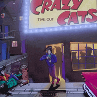

Crazy Cats - Time Out (Album, 1990)
01 - Tainted Love (2:54)
02 - I Feel Fine (2:18)
03 - Ramblin' (2:19)
04 - So Lonely (3:03)
05 - Wonderful Time (2:30)
06 - Ice Cream Man (2:17)
07 - On My Mind (3:11)
08 - 20 Flight Rock (1:41)
09 - Allright Now (3:06)
10 - Heaven I Know (2:21)
11 - Hot Dog Rockin (3:00)
12 - Do It Right (3:07)
13 - Cant Hurry Love (2:56)
14 - Better Love At Night (2:17)
15 - Cottonpicker (Bonustrack) (2:23)
© Black Fantasy Records :: [NW CD 114, BEST NR 3380114-2]
Notes
Germany.
Vinyl Release (Black Fantasy Records [NW LP 114], Vinyl, LP)
Reviewed CD release with bonustrack "Cottonpicker" on its album tracklist.
Band members were labeled as 'King Kat Cool', 'Beasty Bernd', 'Beauty W. Brian', 'Tiger'.
Produced by Crazy Cats at Voice Tonstudios, KS 1991
Cover: Folko Rosch.
Photos: Andreas Berthel
Black Fantasy Records
Distributed by Roughtrade Records
BEST NR 3380014-2
NW CD 114
℗ © 1991 Crazy Cats.
Songs "I Feel Fine", "So Lonely", "Wonderful Time", "Allright Now", "Heaven I Know", "Do It Right" are written-by (here and further: "written-by" or "credited to") Karsten Köhler (K. Köhler).
Songs "Hot Dog Rockin", "Better Love At Night" are written-by Crazy Cats/K. Köhler.
Song "Ramblin'" is written-by K. Köhler / B. Dölle.
Song "Ice Cream Man" is written-by K. Köhler/C. Kavanaugh.
Song "On My Mind" is written-by Crazy Cats.
"Tainted Love" is written-by Ed Cobb.
"20 Flight Rock" is written-by Cochran/Fairchild.
"Cant Hurry Love" is written-by Holland/Dozier.
"Cottonpicker" is a traditional song.
Crazy Cats are a band from Kassel. Active years 1984-2001.
Karsten Köhler, Axel Schönewolf, Helmut Schönewolf
reference information: Discogs®
Review
065/366 (Project 366)
Still remember my first feelings after and while listening to the album. I started to listen to it disorderly, trying to touch and feel Crazy Cats style; and was somewhat confused. Is all OK with that sound? Is it right? So, yes. It is right!
Right amateur Rockabilly Rock'n'Roll! "Amateur?!" you may ask; yes, with this sense of amateur as with something beauty; just how it is with amateur sport matter.
So, these Crazy Cats made a quite crazy records. With exciting rock and roll, awesomely straight rockabilly, sweet lovely songs with its evening tune and just melodious sometimes heartwarming, sometimes touching and appealing songs. And, of course, with some country folk inserts and pieces among songs! And some tracks are inspired by the countryside. It is Rockabilly, it is Rock'n'Roll. With a diversity throughout the album. A little tin sound. Too emotive vocals. Perfect double bass is widely heard! Rockabilly rhythms a lot. Lyrics are rustic, but they perfectly convey the idea. Songs with a delicate conception are pretty.
Album "Time Out" sounds rather popular, although still genre. There are intense and keen musical arrangements. With very interesting musical way and techniques. Another peculiarity and soleness is lead vocal and backing vocals. The voice sounds pretty young, although there are enough serious boys in the artwork picture. The way how it is recorded and how songs are performed by voice is uncommonly interesting. I think that vocals is one of most important parts of this album! Yes, it is pretty common for rockabilly and rock and roll, for early 90's... however there is something else.
Instead of discussing track by track - I will discuss them by kind of flows.
One flow is covers - "Tainted Love":"20 Flight Rock":"Cant Hurry Love":"Cottonpicker".
The flow wherein the first and the last track of the album "Time Out" will be heard. "Tainted Love" is a cover of the famous popular song. And it brings some mods mood! I will call it as something refined. Song is still with its own beauties and recognizable by its shades! But also with Crazy Cats own slightly bonkers smack!
Song "20 Flight Rock" is no less famous and popular than the first track. And actually it was the first song that I listened to. Overlapping sound leads to a less sensed gradual acceleration before the explosion; but slaughter guitars and double bass are mitigated it, perhaps. Broken tune specifically for this track and echoed tune for the entire album were the most significant points that I noticed! This kind of echo, reverberation or repercussion (mostly for vocal) is a specific and interesting glitter of the album. There are some tracks where it is most audible. Thirteenth track "Cant Hurry Love" with strict drums intro with expectation of further drive. What, in fact, is switched to lovely melody and lyrics! Fairly smooth! This is a track where possible to find best of vocals and instrumental abilities. "Cottonpicker" is a perfect bonus track. Very fancy.
Another flow is "So Lonely":"Heaven I Know":"On My Mind" with a stream into flow "Wonderful Time":"Do It Right":"I Feel Fine". Where first flow is a loneliness. And following flow is a little dreamy and fills with pleasant impressions. These flows continue with "Allright Now":"Better Love At Night" into flow "Ramblin'":"Ice Cream Man":"Hot Dog Rockin". Where the sound is more wild. And indeed there flowing switch from rock and roll rampant tunes into rockabillies strength. This is a line of dance sound with still pretty melodic vocals. Probably, groovy songs! From kind of more popular tune to a bit cocky.
Anyway, it would be good to discuss the album in the tracklist order too. Second track "I Feel Fine" a bit lazy but fully of funny happiness. Unhurried floating tune. But, well, it is feeling fine! And it is a good break before further wild records; just like third song "Ramblin'" with its resolute motive. However, even there such a melodic voice appears in addition to the mostly wild sound. What is prediction of further loneliness song "So Lonely". Goody tune. It is even nicely serenade. And could be something as charm of Bremen musicians (Kassel musicians there). Track also with perfect piano solo. In fact, many tracks with short beautiful solos. Piano, guitars... even fingers.
Freshest drink from tenderness is a next song. Fifth track "Wonderful Time" is a wonderful choice on the tracklist. With a real whirl groove. And this song is a tasty snack before line of rockabillies. Such as streamlined "Ice Cream Man". Where is a pretty balanced Rockabilly sound with flavours of slightly crazy wild spins. Ninth song "Allright Now" is about a lot of rockin' and rollin' bullets. From singing and swings to piano rippling. While eleventh track "Hot Dog Rockin" is a really rockin' song but sounds as a good rockabilly action. Perhaps, even with some hills colors. Next song is a lovely "Do It Right". Song is pretty heartful. And tune is walking between wonderful dreamy to more burning feelings. Fourteenth drolling song "Better Love At Night" is a good addition to songs like "Hot Dog Rockin'" and "Allright Now". There are some pretty touches of boogie that create a specific mood.
Track "On My Mind" is a probably most complex, completed, flavorous, beauty and goodly song on the album. Though, it is out of their typical (for album) sound. I prefer to think that "On My Mind" is a really hit with its perfect arrangement that fitted well to entire lyrics, theme and length. In addition, only this track is credited solely and entirely to "Crazy Cats" (as band).
I even do able to propose to name album as such! But... it chosen to be a time out.